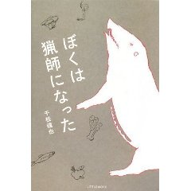
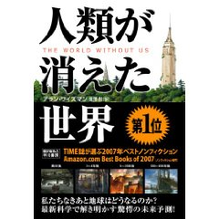
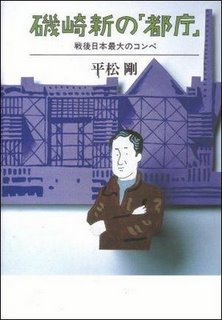

{kind=link}

ぼくは猟師になった 今年は猟師免許を取得しよう！と決めていて、さてさてどーしよーかと漠然と考えていたのだけど、鉄砲打つなら犬も飼わなきゃいけないヨ！…と聞いたとたん、「…犬は無理！猫じゃダメ？ダメだよなー…」と、釣り師に変更しようかどーかと考えていたところに出会った本なのでした。 京都で仕事をしながら猟師として生活する男子の、なぜ猟師になったのか、から猟師になるためのノウハウ、猟師になったあとのノウハウ。 あっさりとした本なので、さらっと読めるのだけど、そのノウハウは重みのあるもの。 そして、この本で再び猟師になろう！と思ったのが猟を鉄砲で行うのではなく「ワナ」で行えるということ。 「あ！鴨がいるぞ！鹿がいるぞ！いのししがいるぞ！」バンパンバン「さー！いけ！」わんわん！ではなく、仕事の前や後にワナを仕込んで、その後また仕事の前や後でワナを見回ると、鹿やらいのししがかかっていれば、それを頂くとゆー一番原始的でシンプルな猟。 山からいのししを下ろしたり、肉をおろしたり、皮をなめしたりと、恐ろしく労力がかかる話すらキラキラ見える猟の魅力。たまらん。 昔からの将来の夢は晴耕雨読、しゃもじ職人。そこに猟も入ればなんとも豊かだな。{kind=link}

人類が消えた世界 廃墟ブームもちょっと落ち着いた昨今（？どうなのだろか？軍艦島はツアーで行けるようになったみたいだけど）。朽ちるとゆー美しさっていったいどこからわき上がるのだろか？ ぴかぴかの真新しい物の美しさと反対側にある、それ。 前にもちょびっと話をどっかで書いたよーな気がするのだけど、私の独り遊びのひとつが朽ちた世界を想像すること。 にょきにょきもこもこと、ぴかぴかのビルが立ち並ぶトーキョーは、年をとるとゆーことを信じられずにいる若い娘のよーで、「おいコラ、そんないい気になっているのも今のうちダケなんだから！」と、ツッコミを入れたくなる。いつも誰かの行き来で空気がとおり、窓はぴかぴか。そんなビルの100年後を考える。 残るものはなんだろう？ そんな世界を具体的な事例を交えて教えてくれたのがこの本だったのだけど、人がいなくなるとゆーのは世界が昔に退行することなのね。 でも、食い散らかした文明のかすが、何年も何百年も世界を蝕んでいる。 エコだけでは世界は救えないという現実が、そこかしこに。{kind=link}

磯崎新の都庁 ひさしぶりにぐいぐい読まされた感じ。 今の仕事の流れに近しい話がベースだからなのかなー。 都庁コンペに立ち向かう磯崎新のアトリエチーム。対抗するのは組織として大手どころと、師匠である丹下健三。どうやってコンペに立ち向かうのかー。 それにしても、どこもかしこも、昔も今もコンペや制作に携わるクライアントの要望やらスケジュールはこんなにもタイトなのかしら？？ うーむ。 それにしても丹下健三の老獪でありながらも、人の心を掴んで（揺さぶって、確固たるものにしちゃう）建築界の神として崇められた理由とゆーのが解った。 「軸」 動線や地脈とゆー言葉があるように都市や人が住む場所には走る線「軸」がある。混沌とした都市計画には軸を通したほうが自然なのだろうな。 そういった必要不可欠な信念を自分の個性にして、人に魅せるということができる才能。権力者の好みをテクニックに変える才能。そしてなにがなんでも！という熱い想い。丹下健三の作品を改めて見たい…っと…あ、この本、磯崎新の本だった。 でも、それだけ丹下健三とゆー存在は圧倒的。 しばらく読書に胸焼けしてたのだけど、最近ふたたびバタバタごくごく読んでます。